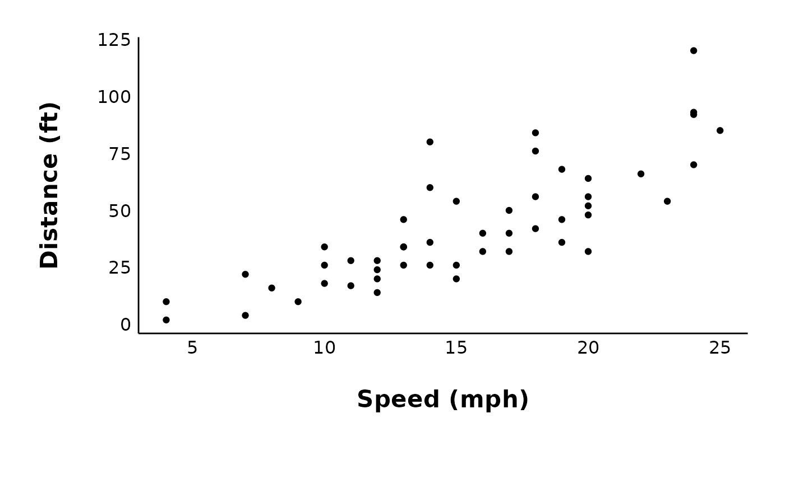
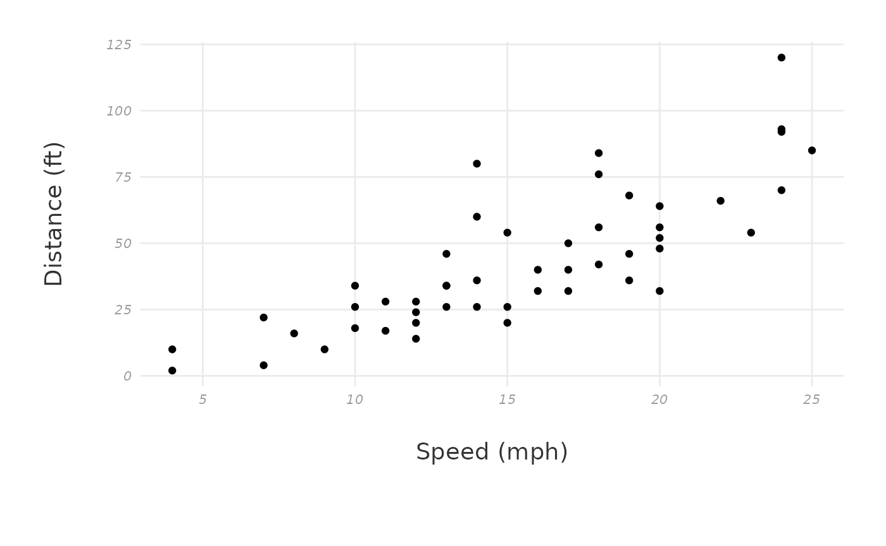
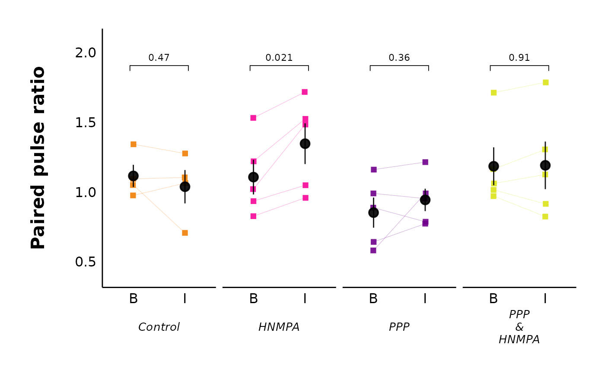
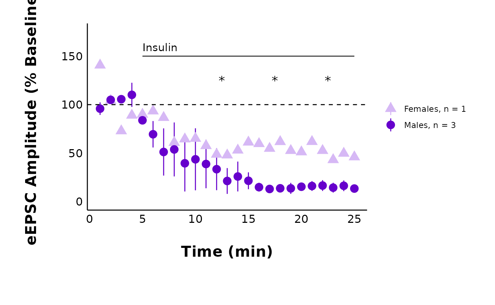

Plotting FAQ
This article contains answers to common questions about plots and
customizing the ggplot output of functions like
plot_raw_current_data().
Note: Above all, if you are confused about how a function works, be sure to check the help page for that function! If you type
?and the name of the function in the R console, it will bring up the help page for the function. For example, type?plot_AP_traceto get information on how to use this function.
There are often extra arguments not included in the examples that you may find helpful if you need to re-adjust parameters like the image position in
plot_summary_current_data()or the bracket line width.
This is the plot we will use throughout the FAQ:
cars_plot <- ggplot(cars, aes(x = speed, y = dist)) +
geom_point() +
labs(x = "Speed (mph)", y = "Distance (ft)") +
patchclampplotteR_theme()
cars_plot
How do I save my plots outside of R?
Most plots have an argument called save_png, which you
can set to “yes” or “no” (the default is “no” to cut down on run time).
If save_png is set to “yes”, this will save the plot as a
.png using ggsave() and export it to a folder.
The subfolder will vary depending on the plot type. For example, all
plots generated using plot_PPR_data_one_treatment() will be
exported to “Figures/Evoked-currents/PPR” relative to your project
directory. If you want further control over the export options, you can
also use ggsave() to manually save a ggplot object.
ggsave(
cars_plot,
path = here("Figures/Raw-plots"),
file = "cars-plot.png",
width = 7,
height = 5,
units = "in",
dpi = 300
)How do I change the plot text sizes?
A quick fix for making the text bigger is the
large_axis_text argument. Set large_axis_text
to “yes” to add a ggplot theme layer which increases and adjusts the
plot to be ideal for posters or presentations. If you want more control
over the font sizes, you can also apply a new theme() layer
and specify the text elements manually. For example:
cars_plot +
theme(text = element_text(size = 25, color = "darkmagenta"))How do I change the plot font family?
This can be tricky and it will vary depending on your operating
system. I would recommend using the extrafont package. You
will need to run the code below the first time you do this. Use
fonts() to see the list of fonts available to you in R.
Warning! font_import() will take a long time to run, especially if you have a lot of fonts on your computer. Luckily, you only need to do this once per system, or after you install a new font.
If the
extrafontpackage does not work, there are newer alternatives, such as theshowtextpackage, which makes it particularly easy to add Google fonts and system fonts.
library(extrafont)
font_import()
fonts()If you already have the fonts installed in R, you just need to run
library(extrafont) at the start of your document to have
the fonts available to use.
cars_plot +
theme(text = element_text(size = 25, color = "darkmagenta", family = "Calibri"))To apply these theme changes globally (i.e. all plots in your file), it will be much more efficient to modify and define a theme. See below!
How do I modify the ggplot theme?
You might wonder things like, “How can I override the default theme
that came with this package?” or “How can I make all my plots have the
same theme/fonts, etc.?”. You can fix this efficiently by defining a
custom ggplot theme and adding this to the ggplot_theme
argument in all plotting functions.
Choose a theme like theme_classic() or the
patchclampplotteR_theme() that came with this package. Use
this theme as a base, and add new theme elements to replace just the
components you want to change (see the
documentation on theme modification in ggplot2. The new theme that
you define will inherit all components of the base theme, but replace
just the elements that you specified.
Important! You must assign this theme to a name, since the
ggplot_themeargument requires a named object. In this example, I will creatively call itmy_new_theme.
my_new_theme <- patchclampplotteR_theme() %+replace%
theme(
text = element_text(size = 25, color = "#333333"),
axis.title = element_text(face = "plain", size = 14),
panel.grid.major = element_line(color = "#ebebeb"),
axis.text = element_text(face = "italic", size = 8, color = "#999999"),
axis.line = element_blank()
)
cars_plot + my_new_theme
Now, insert this theme into the ggplot_theme argument.
This is one of the sample action potential plots with the default theme
applied:
plot_AP_comparison(
sample_AP_data,
plot_treatment = "Control",
plot_category = 2,
y_variable = "peak_amplitude",
y_axis_title = "Peak Amplitude (pA)",
theme_options = sample_theme_options,
baseline_label = "Baseline",
test_type = "wilcox.test",
post_hormone_label = "Insulin",
treatment_colour_theme = sample_treatment_names_and_colours,
save_plot_png = "no",
ggplot_theme = patchclampplotteR_theme()
)Here’s what the same plot looks like with the new theme:
plot_AP_comparison(
sample_AP_data,
plot_treatment = "Control",
plot_category = 2,
y_variable = "peak_amplitude",
y_axis_title = "Peak Amplitude (pA)",
theme_options = sample_theme_options,
baseline_label = "Baseline",
test_type = "wilcox.test",
post_hormone_label = "Insulin",
treatment_colour_theme = sample_treatment_names_and_colours,
save_plot_png = "no",
ggplot_theme = my_new_theme
)Theme FAQ
How do I insert my own colours and treatment names?
You will define your treatment names and colours once at the start,
then refer to it using the treatment_colour_theme in all
plotting functions.
This package comes pre-loaded with
sample_treatment_names_and_colours:
First, check out how many treatment groups you have using
unique(raw_eEPSC_df$treatment).
unique(sample_raw_eEPSC_df$treatment)
#> [1] Control HNMPA PPP PPP_and_HNMPA
#> Levels: Control HNMPA PPP PPP_and_HNMPANext, modify this code to set up your own dataframe with your own hormone names and colours.
my_theme_colours <- data.frame(
treatment = c("Control", "HNMPA", "PPP", "PPP_and_HNMPA"),
display_names = c("Control", "HNMPA", "PPP", "PPP\n&\nHNMPA"),
colours = c("#f07e05", "#f50599", "#70008c", "#DCE319"),
very_pale_colours = c("#fabb78", "#fa98d5", "#ce90de", "yellow")
)Every time a plot contains the argument
treatment_colour_theme, refer to your custom dataframe.
plot_PPR_data_multiple_treatments(
data = sample_PPR_df,
include_all_treatments = "yes",
plot_category = 2,
baseline_label = "B",
post_hormone_label = "I",
test_type = "t.test",
theme_options = sample_theme_options,
treatment_colour_theme = my_theme_colours
)
How do I modify the theme_options?
This dataset contains theme options that will affect all plots. These include values for line thickness and the point shapes for male vs. female data points:
If you want to change these values, please follow these steps.
Step 1: Create a .csv file with two columns
(option and value), modelled after this sample
dataset.
Important!: Your .csv must have identical columns and rows as the sample data, or else the plots won’t work!
Step 2: Read in the .csv file in using
utils::read_csv(). This will now be an object in your R
environment.
Step 3: Important!! You must convert the first
column (option) into the rownames. This is a
mandatory step to allow the theme_options to be indexed by row name in
plotting functions.
Step 4: Run the following code:
library(tibble)
my_custom_theme_options <- read.csv("my_custom_theme_options.csv") %>%
remove_rownames() %>%
column_to_rownames(var = "option")Step 5: Check the resulting object. You should now have 11 objects of
1 variable, and the row names should be
gray_shading_colour, line_col, etc.
Step 6: Go to a plotting function like
plot_raw_current_data() and replace
sample_theme_options with your newly created object from
Step 5.
I changed line_col to orange, and I also changed
male_shape and female_shape. See, the graph
looks different now!
plot_summary_current_data(
data = sample_pruned_eEPSC_df$all_cells,
plot_category = 2,
plot_treatment = "Control",
current_type = "eEPSC",
y_variable = "amplitude",
hormone_added = "Insulin",
hormone_or_HFS_start_time = 5,
include_representative_trace = "no",
y_axis_limit = 175,
signif_stars = "yes",
t_test_df = sample_eEPSC_t_test_df,
large_axis_text = "no",
shade_intervals = "no",
treatment_colour_theme = sample_treatment_names_and_colours,
theme_options = my_custom_theme_options
)
#> Warning: Removed 25 rows containing missing values or values outside the scale range
#> (`geom_segment()`).
What does this package replace?
This package replaces manual plot creation and data analysis in GraphPad Prism and/or Excel. Previously, data analysis would have required transferring data between programs, which is time-consuming and potentially error-prone. This package can be combined with report writing in R to generate fully reproducible manuscripts.
Package FAQ
Who’s Ruby?
Ruby is a rat, and she’s also become an unofficial lab mascot for the Crosby lab! She loves helping out with data analysis, welcoming newcomers to the lab, and keeping lab members company. She found a way to sneak into some of the documentation for this package!
knitr::include_graphics("figures/Ruby-table.jpg")
Ruby says ‘Hello humans!’